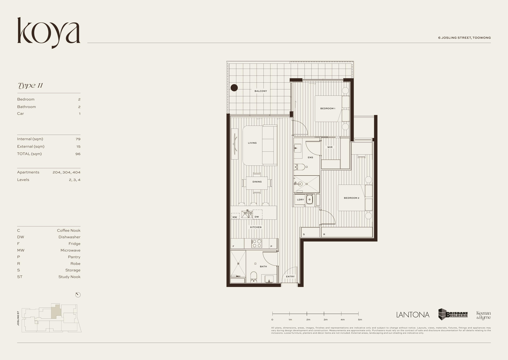
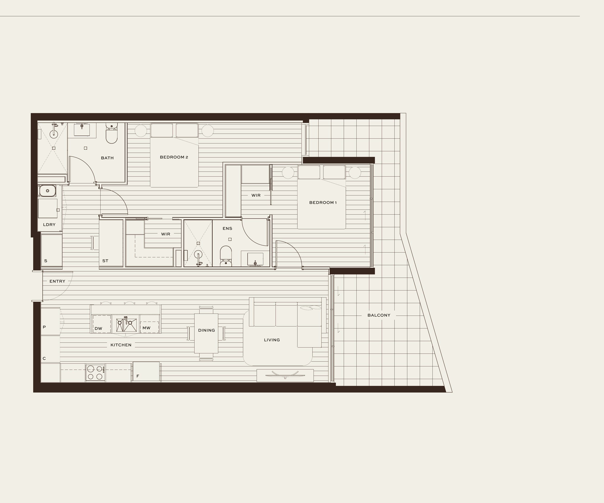

Koya 是位于布里斯班 Toowong 河畔的精选公寓住宅，共 40 套。五层楼高的建筑规模内敛而考究，设计以克制为美，比例与材质的纯粹贯穿始终。
距离 CBD 仅 5 公里，紧邻布里斯班河，步行即达咖啡馆、公园与渡轮码头。日常生活拥有仪式感，城市触手可及。
Toowong 是布里斯班成熟的河边住宅区，绿树成荫的街道与优质公共交通并存，既保有宁静的社区气质，又与城市脉搏紧密相连。
• 距布里斯班 CBD 仅 11 分钟车程
• 紧邻百年自行车道
• Regatta 渡轮码头步行可达
• 昆士兰大学（UQ）5 分钟内
建筑体量以侘寂（Wabi-Sabi）哲学为导向，融合当代日北欧（Japandi）美学。弧形圆角阳台、竖向木格栅与哑光混凝土外墙共同塑造出克制而有力的立面语言。
每层阳台的自然垂挂植物与屋顶乔木，让建筑与 Toowong 绿色环境自然融合，随日光呈现细腻的光影层次。
厨房将优质橡木橱柜、欧洲橡木地板与石材台面融为一体，以实用为本，以美为归。
6 Josling Street, Toowong QLD
距 CBD 5 km · 步行评分 84 · Walk Score
地图仅供参考，距离为近似值。

